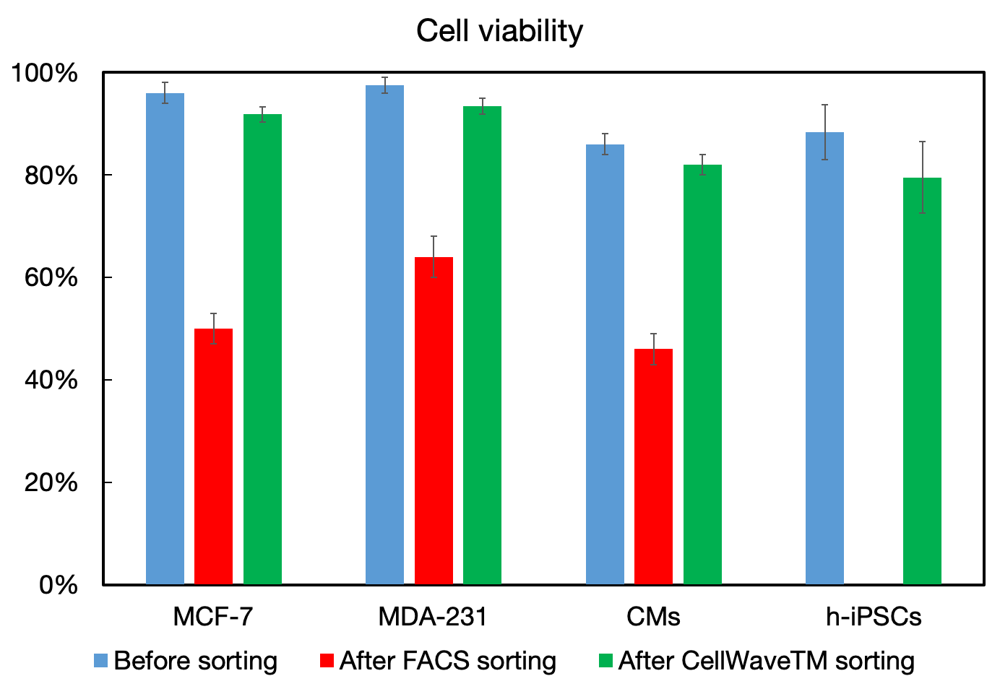
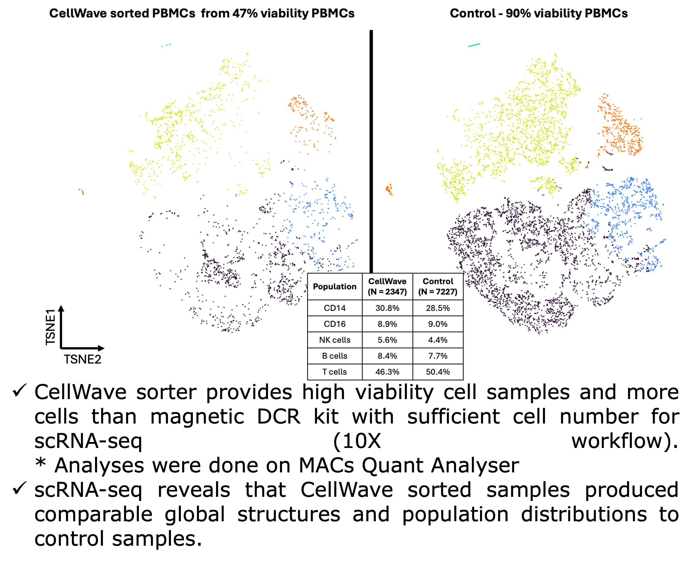
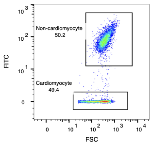
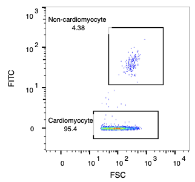
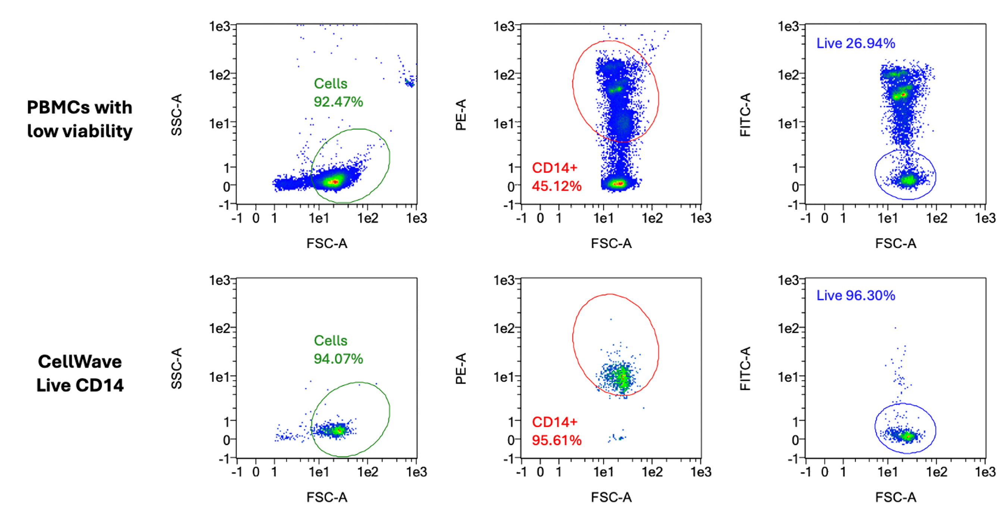
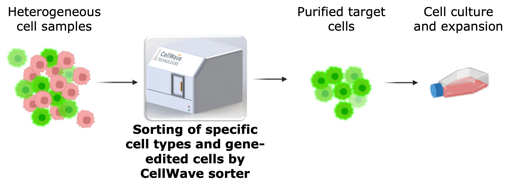

Applications
Dead Cell Removal for scRNA-seq
Dead cells present a significant challenge for single cell RNA sequencing (scRNAseq). Existing methods for dead cell removal also remove a significant number of live cells, compromising sample quality and experimental results.
The comparative study demonstrates CellWave's superior performance across multiple cell types including MCF-7, MDA-231, cardiomyocytes (CMs), and human induced pluripotent stem cells (h-iPSCs). While traditional FACS sorting significantly reduces cell viability (shown in red bars), CellWave sorting maintains high viability levels (shown in green bars) comparable to the original unsorted samples (shown in blue bars).
This gentle acoustic approach ensures that your valuable sample maintains its integrity for downstream scRNAseq analysis, providing more accurate and reliable sequencing results with minimal cell loss.

Before and after dead cell removal showing live cell enrichment
CellWave Viability
maintained across all cell types
FACS Viability
significant viability reduction
Cell Types Tested
MCF-7, MDA-231, CMs, h-iPSCs
Complete scRNA-seq Workflow Comparison
This comprehensive study demonstrates the complete workflow for dead cell removal from cryopreserved peripheral blood mononuclear cells (PBMCs) for single-cell RNA sequencing. High cell viability is critical for scRNA-seq data quality, as ambient genetic materials from dead cells can interfere with results.
Workflow and Results: The study compares CellWave's acoustic sorting technology with magnetic bead-based methods, showing superior performance across the entire process from sample preparation to final analysis. Starting with low viability samples (47% viable PBMCs), CellWave sorting achieved remarkable improvements in cell viability while maintaining cellular diversity.
The results demonstrate that CellWave's gentle sorting technology not only effectively removes dead cells but preserves the biological complexity essential for meaningful single-cell analysis, delivering comparable results to high-quality control samples but with superior cell viability retention.


t-SNE plots comparing CellWave sorted PBMCs (47% initial viability) with high viability controls (90%), and complete workflow comparison showing CellWave's superior performance with higher cell viability and sufficient cell numbers for scRNA-seq analysis.
Other Applications
Cardiomyocytes Sorting
Heart cells (cardiomyocytes) are among the most fragile cell types, making their purification extremely challenging with conventional sorting methods. Traditional FACS can kill up to 50% of these precious cells.
The sorting process demonstrates remarkable precision in isolating cardiomyocytes from mixed cell populations. Starting with an input mixture containing approximately 50% cardiomyocytes, CellWave's gentle acoustic sorting technology successfully enriches the population to over 95% purity.
This breakthrough enables researchers to work with pure, viable heart cells for regenerative medicine, drug screening, and cardiac research applications where high purity is essential for meaningful results.
"If there were a system capable of purifying heart cells and maintaining viability, it would be immensely beneficial for the scientific community." - Asst. Prof. Chrishan Ramachandra, Stem Cell Scientist

Input Mixture (49.4% CM purity)

Sorted CM (95.4% CM purity)
Real-time cardiomyocyte sorting demonstration
Monocyte Subtypes Sorting
Monocytes are a diverse population of immune cells with distinct subtypes that play different roles in immune responses. Precise separation of monocyte subtypes is crucial for immunology research and therapeutic development.
CellWave technology enables researchers to sort specific monocyte populations (classical, intermediate, and non-classical) with high purity and viability. The gentle acoustic sorting preserves cell surface markers and functional characteristics essential for downstream analysis.
This application is particularly valuable for studying inflammatory diseases, immune system disorders, and developing targeted immunotherapies.

Separation of different monocyte subtypes using surface markers
Transfected Cells Sorting
Isolating successfully transfected cells from non-transfected populations is essential for gene therapy research, protein production, and functional studies. Traditional methods often compromise cell viability and transfection efficiency.
CellWave uses fluorescent markers to identify and gently isolate transfected cells using focused acoustic waves. This approach maintains the delicate balance of transfected cells while ensuring high purity for downstream applications.
Applications include isolating cells expressing fluorescent proteins, selecting for specific gene modifications, and enriching populations for functional assays in research and therapeutic development.

Fluorescently labeled transfected cells isolated using acoustic sorting
Application Example: GFP-expressing Cell Enrichment
In gene-editing and cell transfection research, achieving 100% delivery efficiency is often challenging. CellWave technology enables researchers to enrich GFP-expressing cells from mixed populations and culture them for further expansion.
This application demonstrates how acoustic sorting can enhance transfection outcomes by selecting successfully modified cells while preserving their viability and functionality for downstream applications.
The gentle acoustic sorting approach ensures that transfected cells maintain their modifications while removing non-transfected cells, resulting in highly pure populations for research and therapeutic applications. This method is particularly valuable for applications requiring high-purity cell populations for further analysis or therapeutic use.

Enrichment of GFP-expressing MCF-7 cells showing improved fluorescence after CellWave sorting and culture